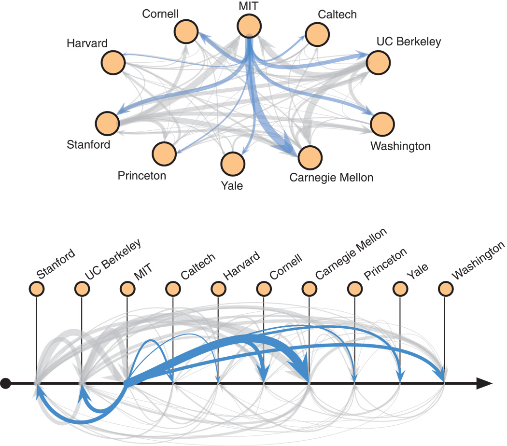
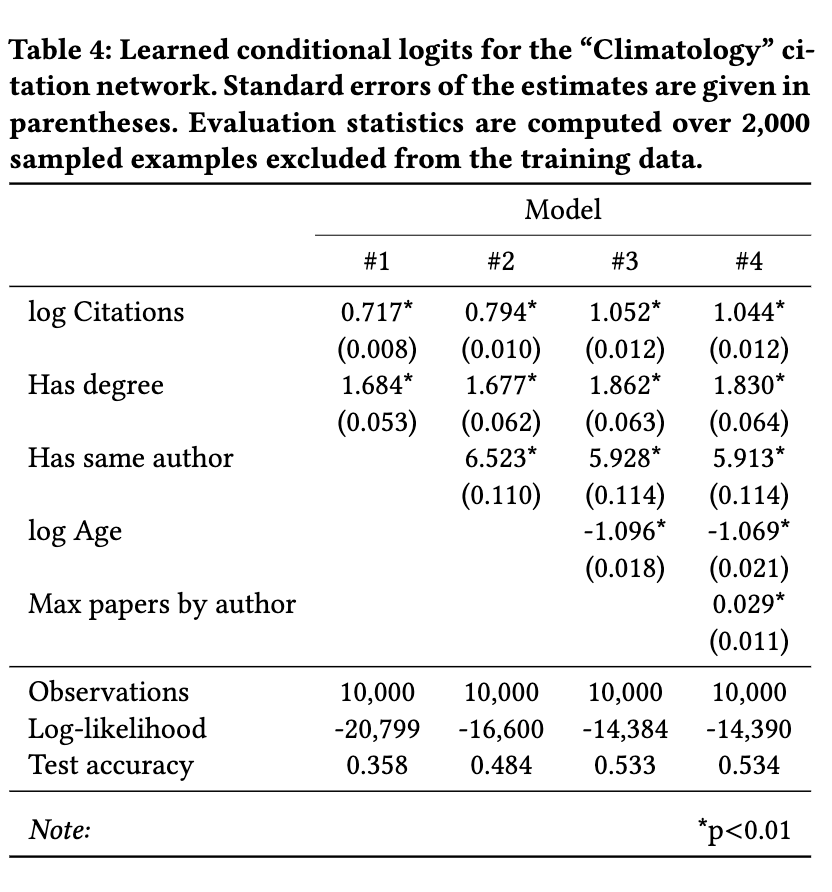

A cynical primer to network analysis
Preface
cyn·i·cal (/ˈsinək(ə)l/): doubtful as to whether something will happen or whether it is worthwhile.
There are many guides to network analysis out there. Those are often enthusiastic about the power of networks; they start by (i) noting how networks are all around us, and (ii) how network science emerged as the natural set of (mathematical) tools to study them. As such, they provide a sense of coherence into the field of network science. In truth, when using networks as practical tools, the process can be quite messy. The ambition here is to put in one place the wisdom that results from embracing our doubts about network analysis. What doubts?
- Do networks even exist; we always make choice about how to represent them. There is no end to this branching process, underminig the confidence in our analysis.
- What happens when the communities we discover clash with the metadata of our networks?
- Things can get messy fast, what if we need hierarchical higher-order temporal multilayerd degree corrected stochastic block models (HHOTMDCSBM) to solve our problems?
- Many tools look nice when applied with (small-scale) social networks. How do they generalize with protein-protein interactions/brain/twitter networks?
The takeaway is the same than any other model-based approach at the moment; to make your way through the mess, you need to be clear about what you are doing, your assumptions and why you are doing it.
The second benefit of stepping away from the usual narrative is the freedom to focus on deepening our comprehension of network analysis, prioritizing depth over breadth. As Grant Sanderson from 3Blue1Brown puts it, I want you to feel that you could have discovered central ideas to network analysis. As such, we are gonna use all the power of the front-end dev tools and interactive data analysis to make the ideas come alive.
Finally, we won’t shy away from making connection to the rest of maths. The big advantage here is that by doing so, we can more easily prepare students to integrate other tools from probability theory and linear algebra to think about how to best integrate model in our toolkit.
My notes are similar in spirit to:
Do networks even exist?
The type of your graph is always an assumption of your making. In the figure above, Clauset and colleagues drawn from theories in sociology to justify the directed edges, aka when institution A hires a PhD from institution B, this is a signal of endorsment from A to B.
We are talking about institutions here, not people. Thus, the authors are willing to imbue “institution” with intentionality, endorsing each other. Could we deconstruct institutions at department level, looking to explain the whole in part by hiring committes?!
Or perhaps at individual-level, with the set of endorsments on a hiring committe sums up in a decision of endorsing a candidate?
Uncynical guides:
These books/notes are uncynical in that they start by (i) noting how networks are all around us, and (ii) how network science emerge as the natural set of (mathematical) tools to study them.
Menczer, Fortunato, and Davis (2020) (github): Great book with accompanying code to do the basics of network analysis in NetworkX. It feels refreshing to have examples drawn
Newman (2018): Mandatory reference (no books get 19K citations without becoming some kind of obligatory reference)
Network Analysis and Modeling CSCI 5352, Fall 2022: Aaron Clauset’s notes on how to do networks right.
Networks are cool, actually
- Creativity:
- Neurolinguistics
- Faculty hiring market:
- Hierarchy:
- Survey:
- Network talks:
- Citation analysis:
